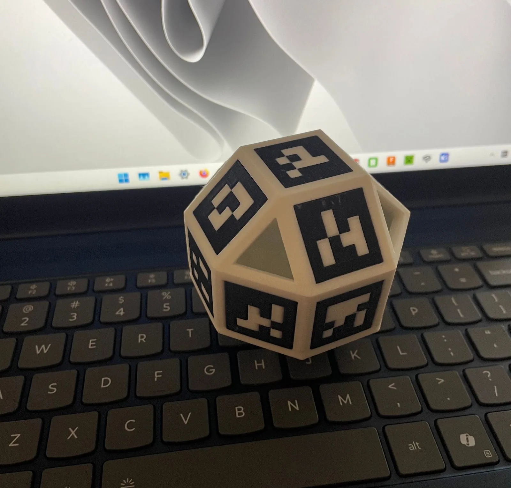
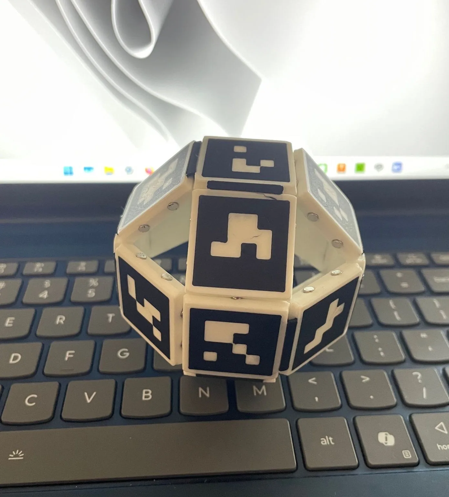
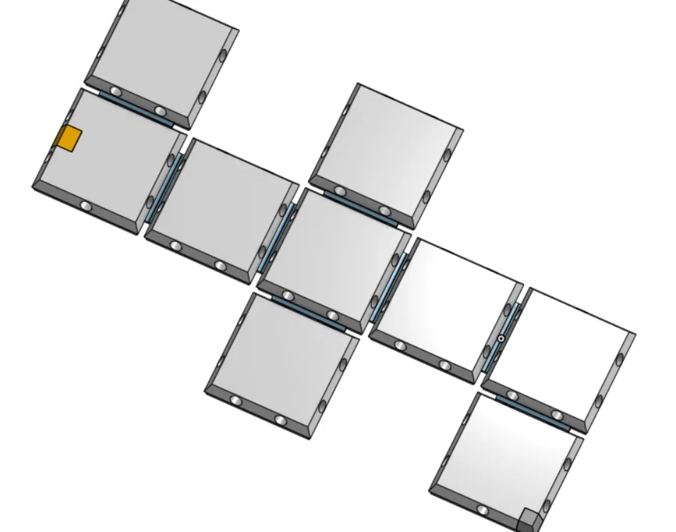
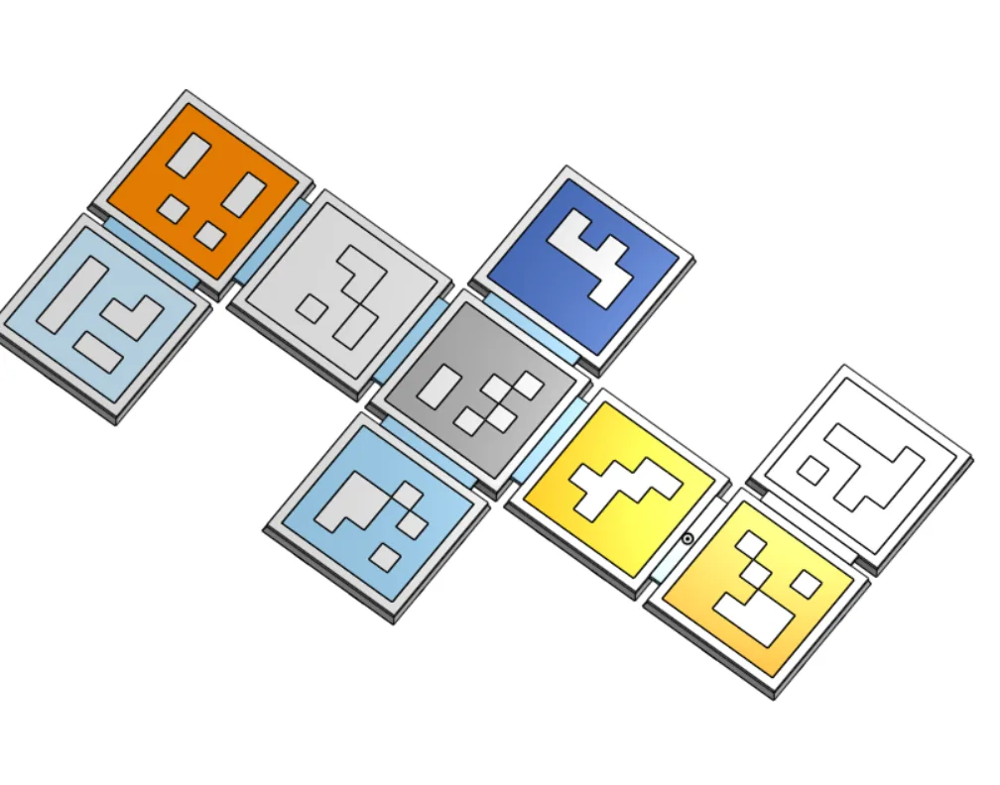
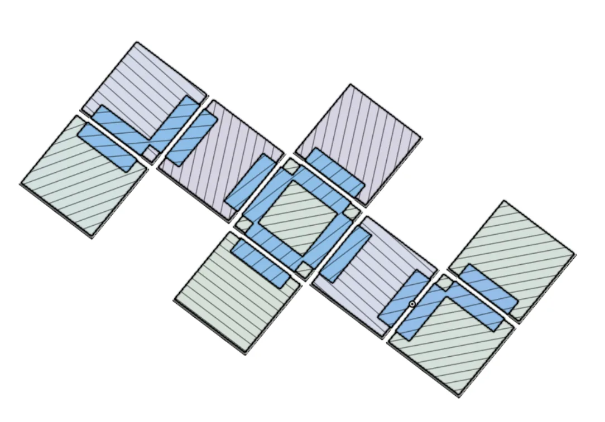

Vision-tracked, position-based CAD mouse
Translates the motion of a real-world object directly to a CAD object, orbiting, panning, and zooming in real time. A collapsible design folds into an extremely flat shape for transport.
- Role
- Sole designer and builder
- Tracking
- AprilTags, global-shutter camera
- Output
- 1:1 orbit, pan, and zoom
- Fabrication
- Multi-material PLA + TPU prints
How it works


A high-fps, monochrome, global-shutter camera tracks a ball with AprilTags in known positions. The right arrow key toggles snapping to the six primary view vectors.
This project led to its successor, the Astrolabe trackball.
Additional capabilities
Filament with a special IR-transparent black pigment makes a fully black design that still tracks when an IR filter is fitted to the camera.
Magnets and flexible TPU joints in the rigid white PLA make the design collapsible. It was printed on multi-tool printers (Bambu Lab H2D and Prusa XL), and small neodymium magnets lock the ball’s hinges in position.
CAD
CAD model of one half of the collapsible object. TPU intersperses the rigid blocks, with extra extensions into each part to minimize delamination.


